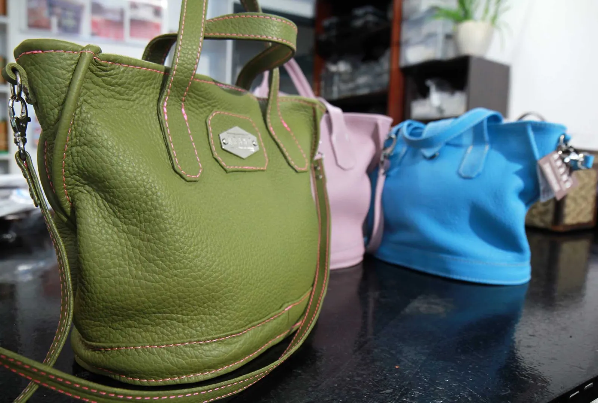
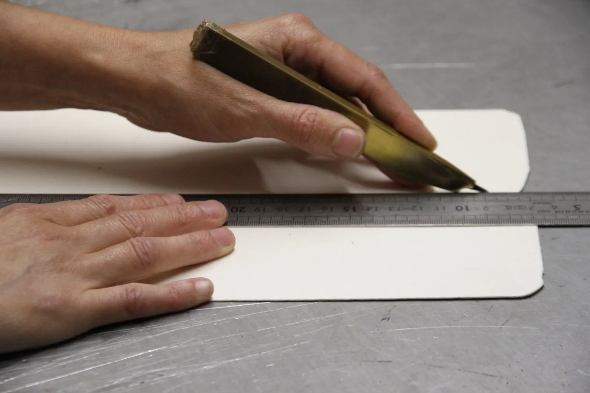
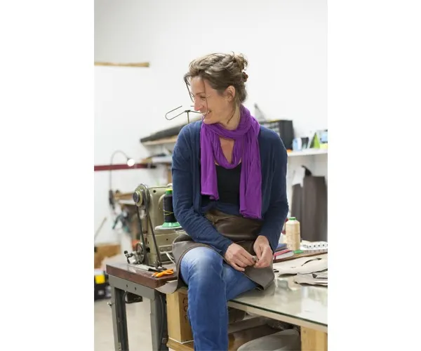
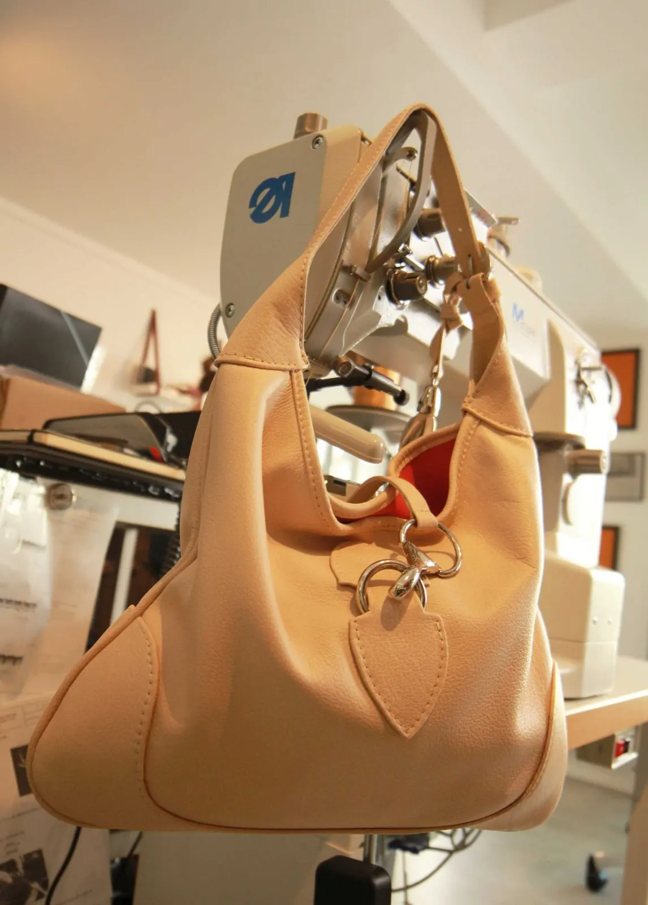
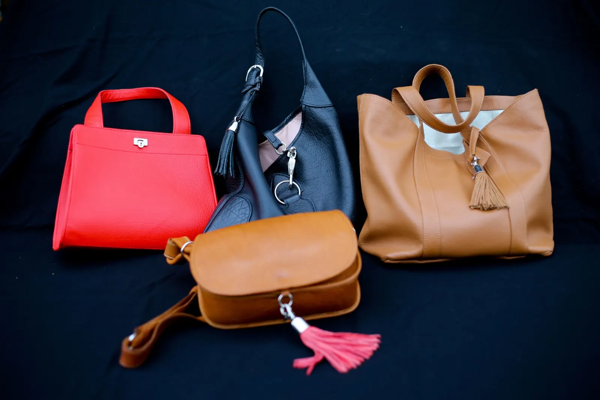
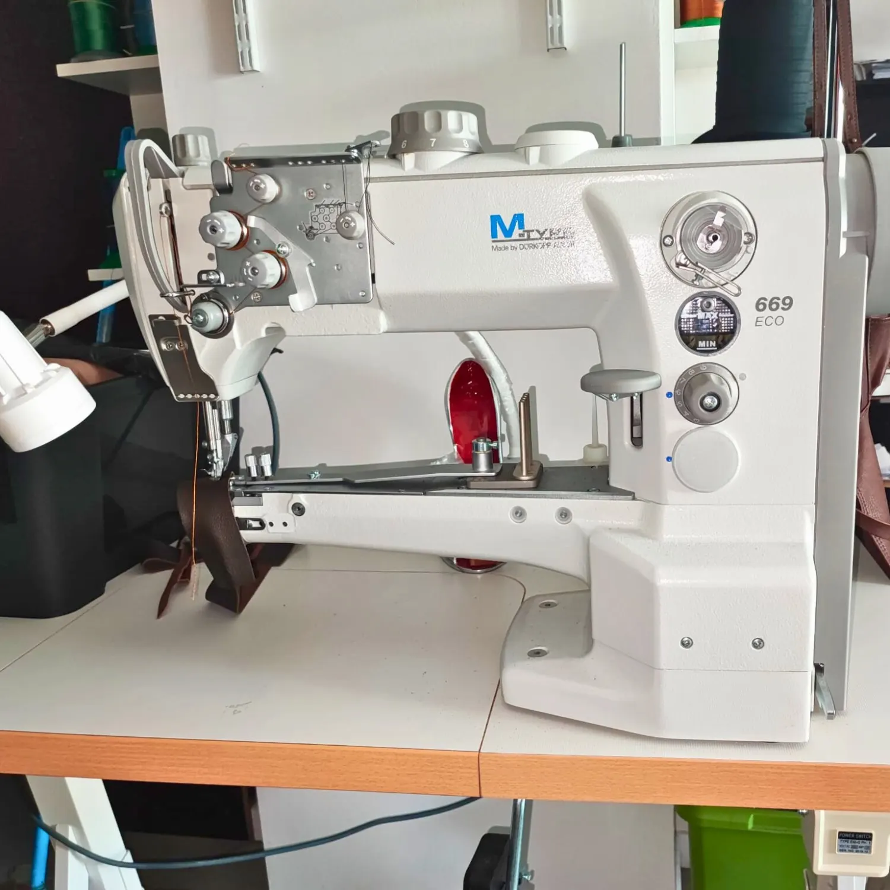
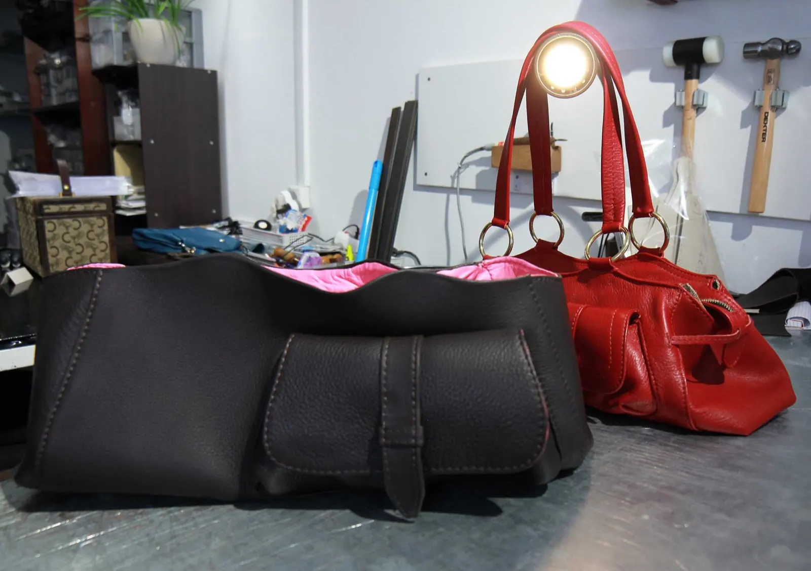
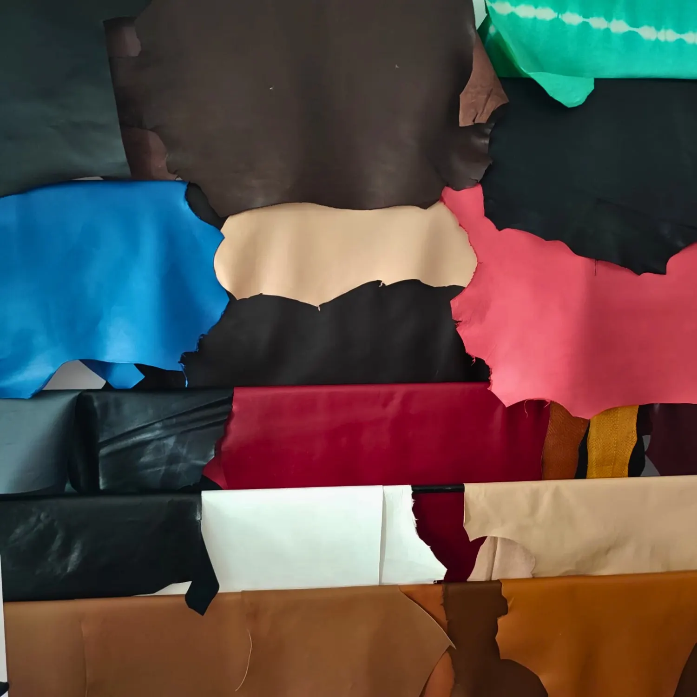
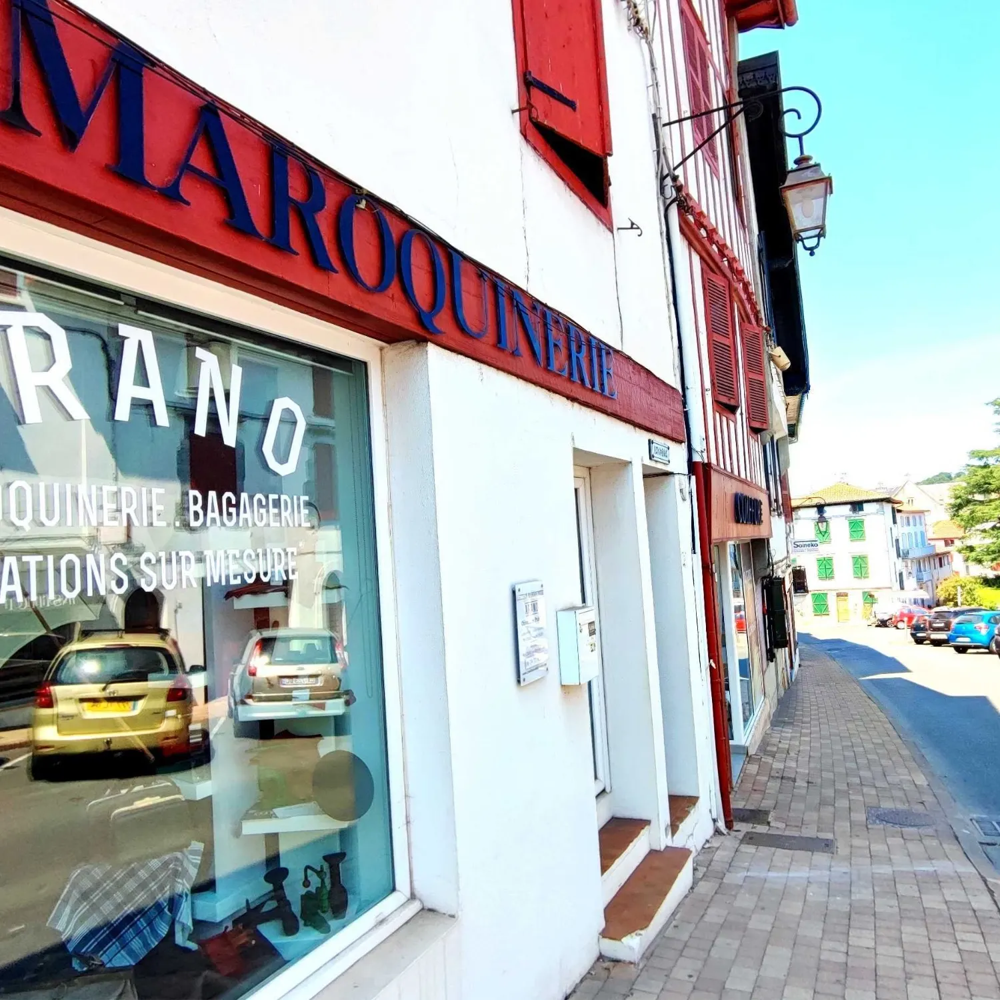

Des sacs en cuir faits pour durer

Au cœur du Pays basque, l'atelier-boutique Arano fabrique et expose sur place ses sacs à main, sa petite maroquinerie et ses créations sur mesure, dans les cuirs des tanneries d'Espelette et d'Armendaritz.
- Depuis 2008d'abord à Itxassou, aujourd'hui à Hasparren
- Plus de 20modèles de sacs Arano
- Plus de 70couleurs de cuir
- Doublure agneaula signature de la maison
De la tannerie à l'atelier-boutique
« Je travaille le cuir avec passion et professionnalisme. » Installée à Hasparren, la maroquinière y fabrique et expose tous ses modèles, devant vous.
- Trois ans
La Tannerie d'Espelette
Elle y apprend à « patiner » le cuir.
- Près d'un an
Chez un bottier-maroquinier de Bayonne
La formation à la maroquinerie.
- 2008
L'Atelier Arrano Mendi, à Itxassou
La naissance de l'atelier, que célèbre Bihotza, le premier sac.
- Aujourd'hui
L'atelier-boutique d'Hasparren
Tous les modèles y sont fabriqués et exposés.


L'idée du sac représente pour moi le voyage, le mélange subtil de l'utile et de l'agréable. Je puise mon inspiration dans les objets, les couleurs, les senteurs de tous les pays que j'ai parcourus, le Cambodge, la Birmanie, la Thaïlande, l'Australie…
La maroquinière de l'atelier Arano

Les sacs, et leurs noms basques
Chaque modèle est une création de l'atelier, et chacun se personnalise selon vos goûts et votre budget. La plupart sont doublés d'agneau « plongé » de Dordogne : une peau souple, fine et soyeuse, la finition la plus prestigieuse.
- Egunero« De tous les jours » : le cabas modèle-phare, créé en 2009.
- Hordago« Je mise tout », au jeu de mus : petit sac en taurillon, deux compartiments.
- LasaiaDe « lasai », la tranquillité : taurillon lisse, doublé agneau, pompon été ou hiver.
- MayaNé en 2020 d'un sac ancien confié par une amie, dans la maison en face de l'atelier.
- Bakarra« Unique » : anses en tresses rondes, doublure en tissu du Cameroun.
- Uda« L'été », en de nombreux coloris et différents cuirs.
Et aussi Herria, Ederra, Luze, Motxila, Llargia, la sacoche Poltsiko, les trousses Rugby, ceintures, porte-monnaie et étuis.

Votre sac, dessiné ensemble
De la longueur des anses à l'intérieur du sac, tout se fait sur mesure. Nous dessinons ensemble votre prochain sac selon vos goûts, votre budget et vos besoins.
- Une peau ou un tissu qui vous est cher, intégré au modèle
- Les fermoirs d'un ancien sac, pour une deuxième vie
- Une gravure au laser de vos textes ou dessins
- Ceintures et bracelets de montre, avec vos boucles
« Un sac à dos sur mesure, léger, souple, et d'une finition exquise. »Gilles Lauga


Il y a cuir… et Cuir
Hasparren fut la cité du cuir. Les peaux d'Arano viennent surtout des tanneries du Pays basque : des cuirs pleine fleur, choisis selon l'article à confectionner, et le choix se fait avec vous, selon votre projet.

Deux tanneries voisines
La tannerie Rémy Carriat, à Espelette, fondée en 1927 : tannage minéral et retannage végétal.
La tannerie Garat, à Armendaritz, fondée en 1790 : six générations de tannage végétal, Entreprise du Patrimoine Vivant depuis 2008.
- Le buffle grainéL'emblème de Rémy Carriat : foulonné, patiné, satiné, d'une solidité sans pareille. 60 coloris en stock.
- Le taurillonUne fleur lisse et fine, souple et soyeuse, très résistante à la déchirure. Coloris sur commande.
- Le taurillon nubuckLégèrement poncé, doux au toucher, et plus résistant aux taches.
- L'agneauLa marque de fabrique d'Arano, pour les doublures : léger, doux, soyeux, de nombreux coloris à l'atelier.
- Le galuchatUn cuir de poisson, pour les bracelets et la petite maroquinerie.
- Les exotiquesSur commande, en plus du veau, du chevreau et des autres cuirs de l'atelier.

Entrez dans l'atelier
66 rue de l'Ursuia, 64240 Hasparren
Les commandes se prennent directement à l'atelier.
- Lundi, mardi, jeudi, vendredi9h-12h et 14h30-18h
- Mercredi matin9h-12h sur rendez-vous
L'atelier est présent sur l'Eusko, la monnaie locale du Pays basque.
arano.creation@gmail.com